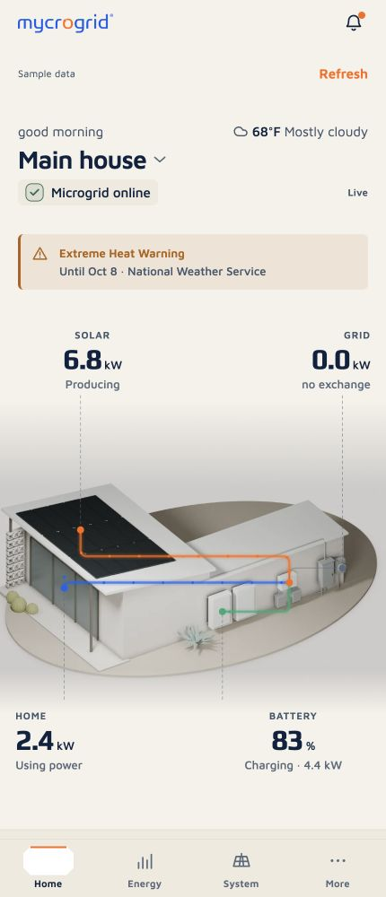

Mycrogrid Platform
One view of a home's energy system. A different view for the team responsible for the whole fleet.

The problem
A home can combine solar equipment, a battery, and a gateway from different manufacturers. Homeowners need to understand what their system is doing; staff need to identify which installations require attention.
The platform pairs the Mycroguard homeowner app with an internal command center. Both use the same vocabulary for energy flows, equipment status, and reporting quality, while presenting different workflows.
Architecture
A shared TypeScript package defines the canonical data model, API contract, normalization helpers, and freshness rules. React and React Native screens read through that contract rather than interpreting manufacturer payloads themselves.
Today, an in-memory client supplies sample installations and simulated telemetry. Provider-specific mappings sit behind a connector interface; the production backend and live equipment access remain future work.
- Canonical values. Units, signed power flows, and missing values are handled before readings reach the interface.
- Multiple connections. Manufacturer belongs to an equipment connection, allowing one installation to combine providers.
- Field precedence. A connection's authoritative fields determine which reading wins when providers overlap.
- Explicit uncertainty. Proposed provider mappings and database migrations remain labeled as provisional.
Implemented workflows
The homeowner prototype covers power flow, energy history, equipment details, messages, and multiple properties. The staff prototype covers fleet views, telemetry, alert triage, installation stages, and service records.
- Home energy. Solar, home consumption, battery charge, and grid exchange share one system view.
- Fleet monitoring. Searchable map and list views, URL-based filters, and CSV export over sample installations.
- Alert triage. Acknowledge, assign, snooze, resolve, and reopen alerts with an activity history in the mock client.
- Service context. Installation stages, visits, and warranty cases alongside equipment and telemetry.

The mobile screen explains where energy is coming from and where it is going. The staff screen puts that same installation in the context of open issues and the wider fleet.
These screenshots show the running prototypes. Neither demonstrates a live manufacturer connection or production deployment.
Reliability decisions
A stale reading can look plausible long after a system stops reporting. Measurement age and connection health therefore contribute to the displayed data quality, with missing readings distinguished from a legitimate zero.
When a refresh fails, the interface preserves the last successful readings, their original timestamps, and a saved-data warning. Demo controls exercise outages, delayed reports, missing values, and interrupted requests without contacting equipment.
Monitoring is read-only toward equipment. Alert actions update the prototype's operational record; they do not change battery settings or send commands to a manufacturer.
What's next
The current build establishes the interfaces and shared contract. Production work still needs to connect and validate the data behind them.
- Validate manufacturer mappings against authorized sandbox responses and actual equipment topology.
- Implement the authenticated backend, persistent storage, and server-enforced staff and customer access.
- Confirm polling intervals and freshness thresholds against provider limits.
- Deploy the notification worker and validate native remote push delivery.